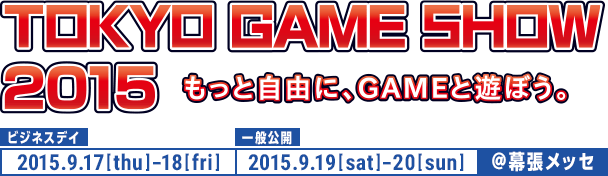
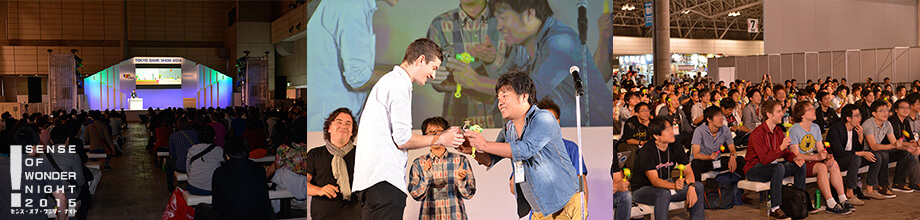

協力：国際ゲーム開発者協会日本（IGDA日本）

「センス・オブ・ワンダー ナイト 2015（SOWN 2015）」は、“見た瞬間、コンセプトを聞いた瞬間に、誰もがはっと、自分の世界が何か変わるような感覚”＝「センス・オブ・ワンダー」を引き起こすようなゲームのアイデアを発掘し、ゲーム開発者に東京ゲームショウ会場でプレゼンテーションと展示の機会を提供する企画として、今年で8回目の開催を迎えます。
2014年は27の国と地域から過去最多の136作品の応募がありました。国内外のゲーム業界からインディーゲームに造詣が深い専門家や制作者・ゲーム配信メーカーからなる10組の選考委員がプレゼンテーションする10作品を選出。国別の内訳は日本から2作品、アメリカから5作品、オーストラリアから2作品、シンガポールから1作品でした。会場には約350名の国際色豊かな参加者が詰めかけ、独創的なゲームやユニークなプレゼンに対してスマイルハンマーで応答し、インタラクティブな盛り上がりを見せました。
最後に“Audience Award” “Best Technological Game Award” “Best Arts Award” “Best Experimental Game Award” “Best Game Design Award” “Best Presentation Award”が表彰され、盛況のうちに終了しました。 またプレゼンテーションした開発者はインディーゲームコーナーにブースを設けて、来場者と活発な交流を行いました。
発表を期待されているのは、プロトタイプのデモや、実験的な要素を持った発売済もしくは発売予定のゲーム、 変なことを思いついた学生が開発したゲームと いったものです。 プロやアマチュアといった区別もまったくありません。 小さなベンチャー企業のゲームや、一人で開発しているような同人ゲームの応募も歓迎します。
もし、「センス・オブ・ワンダー」を引き起こせるようなゲームを発表したいと思われるなら、エントリー方法 をご確認のうえ、ご応募下さい。
謝辞
「センス・オブ・ワンダー ナイト」は、Game Developers Conferenceで、2001年に始まった 「Experimental Gameplay Workshop」から、多くのインスピレーションを受けています。このワークショップを成功させてきた多くの関係者ならびに友人達に、感謝の意を表します。

2002-2015 CESA / Nikkei Business Publications, Inc. All rights reserved.